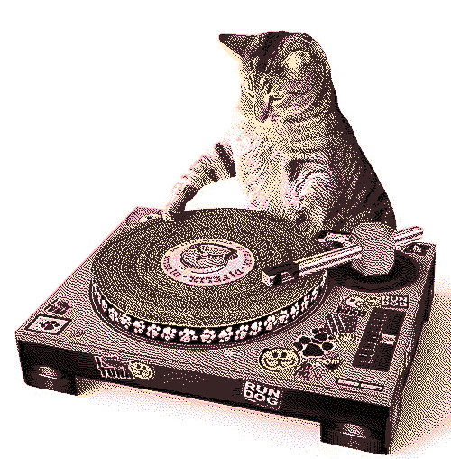

welcome...
to my music page! dedicated to everything that i listen to and love 
one of my most precious memories is making lists of songs i wanted my dad to download on my mp3 player when i was little. throughout my entire life, i have always been accompanied by music, it is something deeply important to me! ♪(´▽｀)
i wanted to have a space where i can talk a little bit about the stuff i like to listen to while also showcasing it as well.
my desktop headphones are the infamous razer kraken kitty headset they are the best sounding headphones i've ever had tbh, when i'm on the go i use my JBL tune 720bt which are sooo nice to wear and they sound great too! and my music player of choice is WACUP! look how cute...
when it comes to streaming stuff, i use bandcamp or youtube preferably. if not, i use this on my phone :) if i enjoy an album or EP A LOT i'll try to get the CD. if not, i'll get it digitally.
feel free to send me a recommendation through e-mail or my rate your music ! i will gladly listen to it whenever i have some time. i love discovering new music 

misc
i run a siinamota fansite, he is my favorite vocaloid producer and i highly recommend his stuff if you enjoy vocaloid. i also run the siinamota song bot on twitter.
important dates